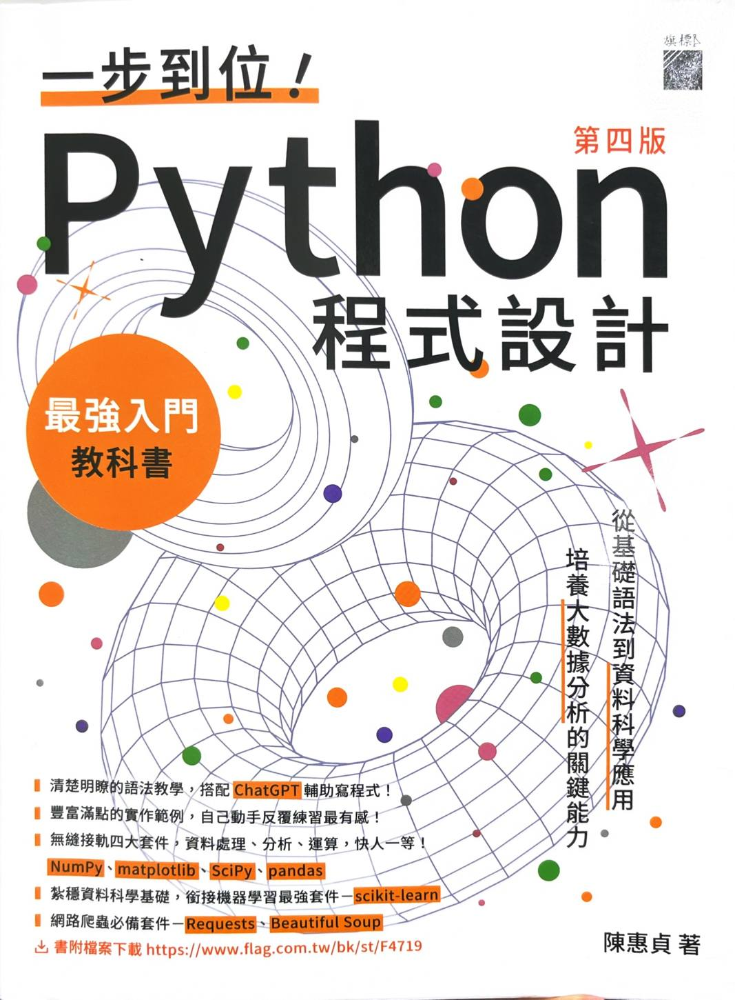

講義掃描本 · 陳惠貞 著 · 旗標出版
一步到位！Python 程式設計（第四版）
開始閱讀
Part 1 基礎篇
1
開始撰寫 Python 程式
5 節 · 未收錄
2
型別、變數與運算子
6 節 · 34 頁
3
數值與字串處理
5 節 · 38 頁
4
流程控制
5 節 · 34 頁
5
函式
9 節 · 36 頁
6
list、tuple、set 與 dict
4 節 · 52 頁
7
檔案存取
5 節 · 未收錄
8
例外處理
2 節 · 未收錄
9
物件導向
4 節 · 38 頁
10
模組與套件
3 節 · 未收錄
Part 2 實戰篇
11
圖片處理與 QR 碼 － pillow、qrcode
2 節 · 未收錄
12
陣列與資料運算 － NumPy
11 節 · 未收錄
13
繪製圖表 － matplotlib
6 節 · 未收錄
14
科學計算 － SciPy
4 節 · 未收錄
15
資料分析 － pandas
3 節 · 未收錄
16
機器學習 － scikit-learn
6 節 · 未收錄
17
網路爬蟲 － Requests、Beautiful Soup
3 節 · 未收錄